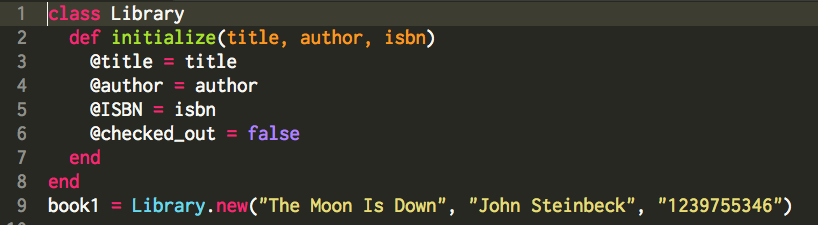
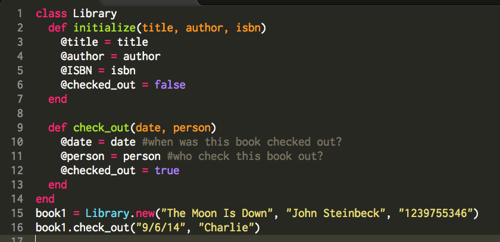
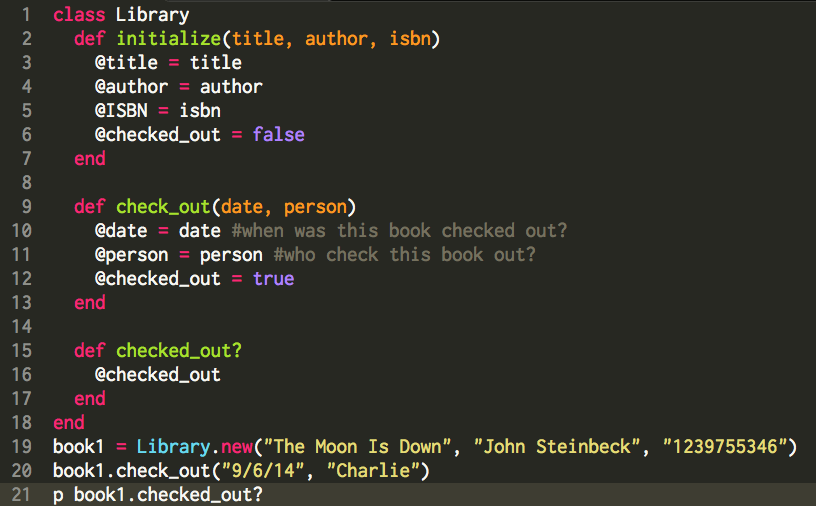
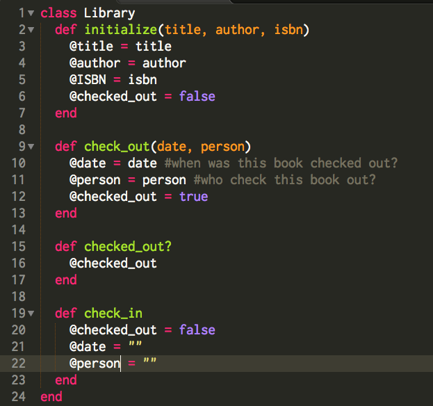

Tech: Ruby Classes
Saturday, September 6, 2014
Object Oriented programming languages are all about objects and classes. Classes allow us to group similar objects together to minimize the work we need to do to create useful methods. For instance, if we did not have an Array class, with a list of a few dozen instance methods, then we would have to define each method every time we wanted to manipulate an array object we create. Because of classes, our Array class has that wonderful list of methods that can be applied to any object of that class. This is great because say we had a class called Library, where each object of the Library class was an individual book. We would not want to have to create a separate #check_out method for each and every book in the Library! That would be tedious and unnecessary. This is why we would create one single #check_out method in our Library class that will allow us to check out any book we want, by just calling that method on our object (remember, each book is an object).
First, lets take a few steps back and talk about the creation of each object (book) in our Library class. Ruby allows us to create an #initialize method in our class, that is automatically called whenever we perform a Library#new call. This allows us to initialize a new object of the Library class.

Here, line 9 creates a new object called book1 that is of the Library class, and it passes a title, author and ISBN to our initialize method. Again, this is just like if we were to say:
book1 = Library.initialize("The Moon Is Down", "John Steinbeck", "1239755346").
These pieces of information, or arguments, must be in the exact order you specify in the initialize declaration, otherwise you will end up with some funky titles, authors and ISBNs.
Now that we have created a brand new object, book1, on line 1, we want to use a newly made Library#check_out method on it. Because book1 is an object or our Library class, we can use this #check_out method. This is because #check_out is an instance method, which means it can be used on instances of the class, and each object is an instance of a class, thus the instance method #check_out is usable on the instance of Library class book1.

Lets take a look at the newly created instance method #check_out. This instance method has two parameters, the date and person. We have to pass this information to the method so we can know who checked out our book and when. Declaring this method within the class makes it an instance method for our Library class. What if we put it outside of the class you say? Well, then we could call #check_out on any object type we wanted, say, the crown jewels. It wouldn't make much sense to be able to check out the crown jewels now would it? That is why we declare the #check_out method in the class, we want it to be only usable on objects of our Library class and nothing else.
So, now we have a method that lets us check out a book, but right now, we have no way of knowing if a book is checked out. It might be important to be able to know the status of @checked_out, which is why we have things called getters. Getters are convenient methods used for retrieving information on an object. Take a look:

This method #checked_out? simply returns the value of @checked_out to us. Now when we enter the code on line 21, we get the current value of @checked_out. Getters typically come with setters, methods used for changing values associated with an object. We will want a getter for @checked_out because we will want to change that value depending on its status, however for values like the book title, we will not want setters since that is not going to change.

Our method #check_in changes the values of @checked_out, @date and @person to reflect the now checked in status. We want to remove the values of date and person because we don't want their information to be reflected later on, and we need to also set @checked_out to false so when we call #checked_out? we will be given the correct value.
Really, this topic is very in depth, and the options are endless for our Library class. Hopefully you can have a little bit better understanding of Ruby classes and objects. From here, we could add as many books as we wanted in the form of Library class objects, and have getters for the information about who checked out what book when.